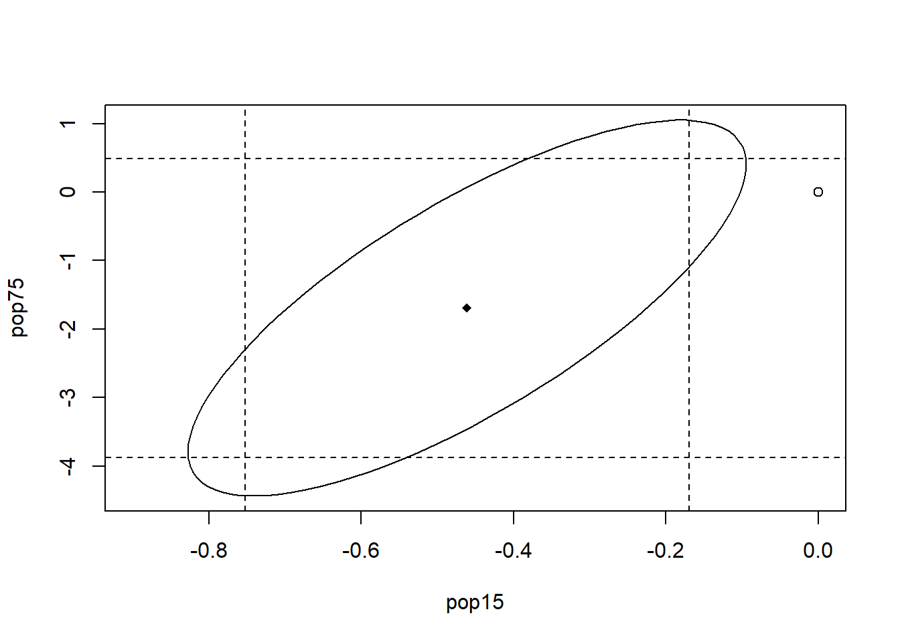

Chapter 3 Inference
A methodology to draw conclusions about the unknown population parameters \(\beta_0,\dots,\beta_p\) from the estimators \(\hat{\beta}_0,\dots,\hat{\beta}_p\).
3.1 Hypothesis Tests
Procedure
Consider a null hypothesis \(H_0\) and an alternative hypothesis \(H_A\). Define p-value as: \[ \mathbb{P}(\textrm{observed or more extreme departure from }H_0\textrm { in favor of }H_A|H_0\textrm{ is true}). \] Given a predetermined significance level \(\alpha\in(0,1)\), we reject the null hypothesis if p-value \(<\alpha\).
Assumption
To compute the p-value, we need to make assumptions about the model distribution:
\[ \varepsilon\sim \mathcal{N}_n(\boldsymbol{0},\sigma^2I). \] Then, \(\hat{\boldsymbol{\beta}}\sim\mathcal{N}_p(\boldsymbol{\beta}, \sigma^2(X^\top X)^{-1})\) — sample distribution of the statistic \(\hat{\boldsymbol{\beta}}\).
3.1.1 T-statistic and F-statistic
Based on the normality assumption, we can now derive the distribution of the \(t\)-statistic (Theorem 3.1) and the \(F\)-statistic (Theorem 3.2) as follows.
Definition 3.1 (Standard error) The standard error (SE) of a statistic (usually an estimator of a parameter, like the average or mean) is the standard deviation of its sampling distribution.
The standard error of \(\hat{\beta}_i\) is \[ \textrm{se}(\hat{\beta}_i) = \sqrt{\sigma^2(X^\top X)^{-1}_{ii}} \] which can be estimated by (biased) \[ \widehat{\textrm{se}}(\hat{\beta}_i) = \sqrt{\hat{\sigma}^2(X^\top X)^{-1}_{ii}}. \]
Theorem 3.1 (t-statistic) \(T:=\frac{\hat{\beta_j}-\beta_j}{\widehat{\textrm{se}}(\hat{\beta}_j)}\sim t_{n-(p+1)}\). This is in contrast to that \(\frac{\hat{\beta_j}-\beta_j}{{\textrm{se}}(\hat{\beta}_j)}\sim \mathcal{N}(0,1)\)
Proof. It is sufficient to show \(\frac{\widehat{\textrm{se}}(\hat{\beta}_j)}{{\textrm{se}}(\hat{\beta}_j)}=\sqrt{\frac{\hat{\sigma}^2}{\sigma^2}}\sim \sqrt{\frac{\chi^2_{n-p-1}}{n-p-1}}\). Define the projection matrix \(\hat{H}:=I-X(X^\top X)^{-1}X^\top\). So, we have \[ \begin{aligned} \hat{\sigma}^2 &= \frac{1}{n-p-1}\boldsymbol{y}^\top H\boldsymbol{y} \\ &=\frac{1}{n-p-1}\bigg(\varepsilon^\top H\varepsilon + \underbrace{2\varepsilon^\top HX\boldsymbol{\beta} + \boldsymbol{\beta}^\top X^\top H X\boldsymbol{\beta}}_{=0\textrm{ by projection theorem}}\bigg) \\ &=\frac{1}{n-p-1}\varepsilon^\top\left(\sum_{i=1}^{n-p-k}\boldsymbol{u}_i\boldsymbol{u}_i^\top\right)\varepsilon \\ &= \frac{1}{n-p-1}\sum_{i=1}^{n-p-1}(\boldsymbol{u}_i^\top\varepsilon)^2 \end{aligned} \] where \(\boldsymbol{u}_i\)’s are the eigenvectors of \(H\) associated with the \(n-p-1\) non-zero eigenvalues. Since \(\lVert \boldsymbol{u}_i\lVert_2=1\), we have \(\boldsymbol{u}_i^\top\varepsilon\sim\mathcal{N}(\boldsymbol{0},\boldsymbol{u}_i^\top(\sigma^2I)\boldsymbol{u}_i)=\mathcal{N}(\boldsymbol{0},\sigma^2I)\). Therefore, we have \((n-p-1)\hat{\sigma}^2/\sigma^2\sim \chi_{n-p-1}^2\).
Theorem 3.2 (F-statistic) Suppose \(H_0\) claims a subset (\(\geq1\)) of predictors as insignificant (e.g., \(H_0:p_1=p_2=0\)) and \(H_A\) is the alternative. Fit a model under each of \(H_0\) and \(H_0\cup H_A\) and compute \(RSS_{H_0}\) and \(RSS_{H_A}\) respectively. Then, \[ F:=\frac{(\textrm{RSS}_{H_0}-\textrm{RSS}_{H_0\cup H_A})/(\text{df}_{H_0}-\text{df}_{H_0\cup H_A})}{\textrm{RSS}_{H_0\cup H_A}/\textrm{df}_{H_0\cup H_A}} \] follows \(F\)-distribution with degrees of freedom \(\text{df}_{H_0}-\text{df}_{H_0\cup H_A}\) and \(\textrm{df}_{H_0\cup H_A}\).
Proof. Following the proof of Theorem 3.1, we know that \(\frac{\textrm{RSS}_{H_0}}{\textrm{df}_{H_0}}=\hat{\sigma}_{H_0}^2\sim\chi_{\textrm{df}_{H_0}}^2\). Then, the result follows readily from the additivity of chi-squared distribution and the definition of \(F\)-distribution.
- Here, \(H_0\) and \(H_A\) should be treated as sets of predictors that are not excluded (due to insignificance). Notice in the \(F\)-statistic, the actual alternative hypothesis is \(H_0\cup H_A\), which must be a superset of the null hypothesis (or using more predictors). For example, \(F\)-test can test \(H_0:\beta_1=\beta_2=0\) and \(H_A:\beta_1=0\), but cannot test \(H_0:\beta_1=\beta_2=0\) and \(H_A:\beta_1=\beta_3=0\).
3.1.2 Test whether a coefficient \(\beta_i\) is significant
\(H_0:\beta_i=0\) and \(H_A:\beta_i\neq 0\) (or more generally \(H_0:\beta_i=c\) for some constant \(c\))
(two-sided) \(t\)-test: p-value = \(\mathbb{P}(|\hat{\beta}_i|\geq \hat{\beta}_i(\mathcal{D})|H_0) = 1 -\textrm{CDF}_{t_{n-p-1}}\left( \frac{\hat{\beta}_i(\mathcal{D})}{\widehat{\textrm{se}}(\hat{\beta}_i)}\right)\)1
\(F\)-test: p-value = \(1-\textrm{CDF}_{F_{1,n-p-1}}(\hat{F}(\mathcal{D}))\) where \(\hat{F}(\mathcal{D})\) is the \(F\)-statistic in Theorem 3.2
data(savings)
h0 <- lm(sr ~ pop15 + dpi + ddpi, savings) # Model under H0
h0a <- lm(sr ~ pop15 + pop75 + dpi + ddpi, savings) # Model under H0 + HA
anova(h0, h0a)## Analysis of Variance Table
##
## Model 1: sr ~ pop15 + dpi + ddpi
## Model 2: sr ~ pop15 + pop75 + dpi + ddpi
## Res.Df RSS Df Sum of Sq F Pr(>F)
## 1 46 685.95
## 2 45 650.71 1 35.236 2.4367 0.1255For single predictor testing, the \(F\)-test and two-sided \(t\)-test are equivalent because \(T^2=F\) (statistics equal) and \(t_n=F_{1,n}\) (distributions equal)
By Theorem 2.3, \[ \textrm{RSS}_{H_0}-\textrm{RSS}_{H_0\cup H_A} = \hat{\beta}_i\boldsymbol{x}_i^\top \tilde{R}\boldsymbol{y} = \frac{(\boldsymbol{x}_i^\top \tilde{R}\boldsymbol{y})^2}{\boldsymbol{x}_i^\top\tilde{R}\boldsymbol{x}_i}=\hat{\beta}_i^2\boldsymbol{x}_i^\top\tilde{R}\boldsymbol{x}_i \] where \(\tilde{R}\) is the residual matrix of the \(n-1\) predictors without \(\boldsymbol{x}_i\). The last piece is completed by \(\boldsymbol{x}_i^\top\tilde{R}\boldsymbol{x}_i=(X^\top X)_{ii}^{-1}\) using block matrix inversion: \[ \begin{aligned} (X^\top X)^{-1} &= \begin{pmatrix} \tilde{X}^\top \tilde{X} & \tilde{X}^\top\boldsymbol{x}_i \\ \boldsymbol{x}_i^\top \tilde{X} & \boldsymbol{x}_i^\top \boldsymbol{x}_i \end{pmatrix}^{-1} \\ &= \begin{pmatrix} \ast & \ast \\ \ast & \left(\boldsymbol{x}_i^\top\boldsymbol{x}_i-\boldsymbol{x}_i^\top\tilde{X}(\tilde{X}^\top\tilde{X})^{-1}\tilde{X}^\top\boldsymbol{x}_i\right)^{-1} \end{pmatrix} \\ &= \begin{pmatrix} \ast & \ast \\ \ast & \left(\boldsymbol{x}_i\tilde{R}\boldsymbol{x}_i\right)^{-1} \end{pmatrix}. \end{aligned} \]
3.1.3 Test whether a pair/subset can be excluded from the model
\(H_0:\beta_1=\beta_2=0\) and \(H_A:\neg H_0\)
- Standard application of \(F\)-test
- Test whether any of the predictors are useful: \(H_0:\beta_1=\dots=\beta_p=0\) (not including the intercept).2
data(savings)
h0 <- lm(sr ~ pop15 + ddpi, savings) # Model under H0
h0a <- lm(sr ~ pop15 + pop75 + dpi + ddpi, savings) # Model under H0 + HA
anova(h0, h0a)## Analysis of Variance Table
##
## Model 1: sr ~ pop15 + ddpi
## Model 2: sr ~ pop15 + pop75 + dpi + ddpi
## Res.Df RSS Df Sum of Sq F Pr(>F)
## 1 47 700.55
## 2 45 650.71 2 49.839 1.7233 0.193.1.4 Test whether the pair of predictors has the same effect
\(H_0:\beta_1=\beta_2\) and \(H_A:\beta_1\neq \beta_2\)
Use \(F\)-statistic. Under \(H_0\), we have \(\mathbb{E}[Y|X] = \beta_0+\beta_1(X_1+X_2)+\beta_3X_3+\dots+\beta_pX_p\). \(H_A\) is the original regression line.
h0 <- lm(sr ~ I(pop15 + pop75) + dpi + ddpi, savings)
h0a <- lm(sr ~ pop15 + pop75 + dpi + ddpi, savings)
anova(h0, h0a)## Analysis of Variance Table
##
## Model 1: sr ~ I(pop15 + pop75) + dpi + ddpi
## Model 2: sr ~ pop15 + pop75 + dpi + ddpi
## Res.Df RSS Df Sum of Sq F Pr(>F)
## 1 46 673.63
## 2 45 650.71 1 22.915 1.5847 0.21463.2 Confidence Interval (CI)
Given the normality assumption of the noise, the CI can be constructed directly from the distributions of \(\hat{\beta}_i\)’s. Under significance level \(\alpha\) or confidence \(1-\alpha\):
Two-sided CI: \(\hat{\beta}_i\pm t_{n-p-1}^{({\color{red}\alpha}{\color{red}/}{\color{red}2})}\widehat{\textrm{se}}(\hat{\beta}_i)\)
One-side CI: \(\big(-\infty,\hat{\beta}_i+t_{n-p-1}^{({\color{red}\alpha})}\widehat{\textrm{se}}(\hat{\beta}_i)\big]\)
Simultaneous CI: notice \[ \begin{aligned} &\frac{(\hat{\boldsymbol{\beta}}-\boldsymbol{\beta})^\top\left[\widehat{\textrm{se}}(\hat{\boldsymbol{\beta}})\right]^{-1}(\hat{\boldsymbol{\beta}}-\boldsymbol{\beta})}{p+1} \\ = &\frac{(\hat{\boldsymbol{\beta}}-\boldsymbol{\beta})^\top(X^\top X)(\hat{\boldsymbol{\beta}}-\boldsymbol{\beta})}{(p+1)\hat{\sigma}^2} \\ =&\frac{(\hat{\boldsymbol{\beta}}-\boldsymbol{\beta})^\top\left[{\textrm{se}}(\hat{\boldsymbol{\beta}})\right]^{-1}(\hat{\boldsymbol{\beta}}-\boldsymbol{\beta})/(p+1)}{\hat{\sigma}^2/\sigma^2}\sim F_{p+1,n-p-1} \end{aligned} \] To see the last term follows \(F_{p+1,n-p-1}\), suppose \(\boldsymbol{z}\sim\mathcal{N}_{p+1}(\boldsymbol{0},\Sigma)\), then we have \[ \boldsymbol{z}^\top\Sigma^{-1}\boldsymbol{z}=\boldsymbol{e}^\top\Sigma^{1/2}\Sigma^{-1}\Sigma^{1/2}\boldsymbol{e}=\boldsymbol{e}^\top\boldsymbol{e}\sim\chi_{p+1}^2. \] We bound the statistic from above since \(F\)-distribution is one-sided over \([0,\infty)\) and we want to measure how close \(\boldsymbol{\beta}\) is to \(\hat{\boldsymbol{\beta}}\). The result is \((\hat{\boldsymbol{\beta}}-\boldsymbol{\beta})^\top X^\top X(\hat{\boldsymbol{\beta}}-\boldsymbol{\beta})\leq (p+1)\hat{\sigma}^2F_{p+1,n-p-1}^{(\alpha)}\).
##
## Attaching package: 'ellipse'## The following object is masked from 'package:graphics':
##
## pairsdata(savings)
result <- lm(sr ~ pop15 + pop75 + dpi + ddpi, savings) # estimate linear regression coefficients
conf <- confint(result) # compute confidence intervals for every predictor
plot(ellipse(result, c('pop15', 'pop75')), type="l", xlim=c(-0.9,0)) # plot the confidence region
points(result$coef['pop15'], result$coef['pop75'], pch=18) # add the estimate to the plot
points(0, 0, pch=1) # add the origin to the plot
abline(v=conf['pop15',], lty=2) # add the confidence interval for pop15
abline(h=conf['pop75',], lty=2) # add the confidence interval for pop17
- Notice that simultaneous CI may contain points that are excluded by individual CI and vice versa.